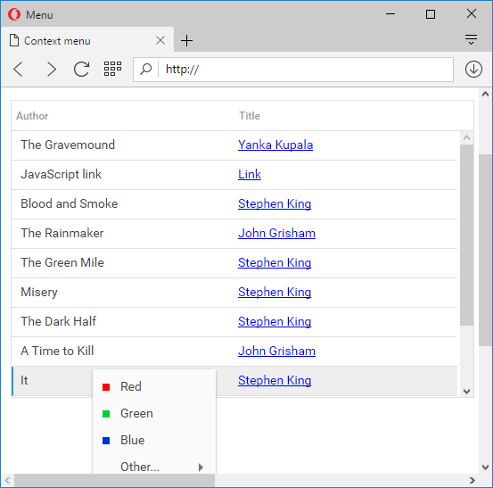

To remove all loaded items from menu, users should call clearAll method. Meanwhile, users are allowed to load another XML:
myMenu.clearAll();
The unload method gives the possibility to unload the component completely:
var myMenu = new dhtmlXMenuObject();
...
// unload menu
myMenu.unload();
myMenu = null;
The user can choose the mode to set for the top-level items of the new menu object. There are two modes available:
The setOpenMode method is used to set the menu mode:
myMenu.setOpenMode("win");
Setting the "web" mode from the script is not required because it's already set by default.
When the Menu is set to the web mode, there is an opportunity to set the period of time, during which the menu will be held expanded, even if the user moves the mouse outside the menu area. By default this time is set to 400 msec.
To set this time period, the user should use the setWebModeTimeout method:
myMenu.setWebModeTimeout(time);
The setVisibleArea method sets the rectangle area in which sub-level polygon items will be able to appear. If this area is not set, sub-level polygon items can occupy any available visible space.
The parameters are:
myMenu.setVisibleArea(x1,x2,y1,y2);
When using dhtmlxGrid with a Context menu, you often meet some inconveniences. For example, you need to read the context menu of the record placed at the bottom of the grid, but appearing scrollbars of the browser will impede the implementation of this task.

To avoid displaying of the horizontal scroll, set the visible area and define the menu's position (set grid's coordinates to achieve this).
In dhtmlxMenu the visible area is automatically calculated and occupies just the visible area of the browser. If a menu opens to the bottom, but there isn't enough space to open menu at the bottom, it will automatically opens on top (even if the scroll allows opening the menu top bottom).
There is the possibility to hide all open polygons in a menu from script with the help of hide method:
myMenu.hide();
By default there is no limits on the number of visible menu items in any sub-level polygon. However, the user can limit the number of visible items in a sub-level polygon using setOverflowHeight method.
This method adds scroll-arrows to a sub-level polygon, if there are more visible menu items than it is allowed by the setOverflowHeight method. The following example shows how this method should be used as a function with any of the data loading methods:
myMenu.setOverflowHeight(4);
myMenu.loadStruct("dhtmlxMenu/codebase/dhtmlxmenu.xml");
The user is allowed to set left or right aligning direction in menu with the help of setAlign method as follows:
myMenu.setAlign("right");
There is a possibility to place text at the top of the menu using the setTopText method:
myMenu.setTopText("dhtmlxMenu 4.0");
The setHref method allows users to add a link to the menu bar. In order to clear current links, users should call the clearHref method:
myMenu.setHref(itemId, href, target);
myMenu.clearHref(itemId);